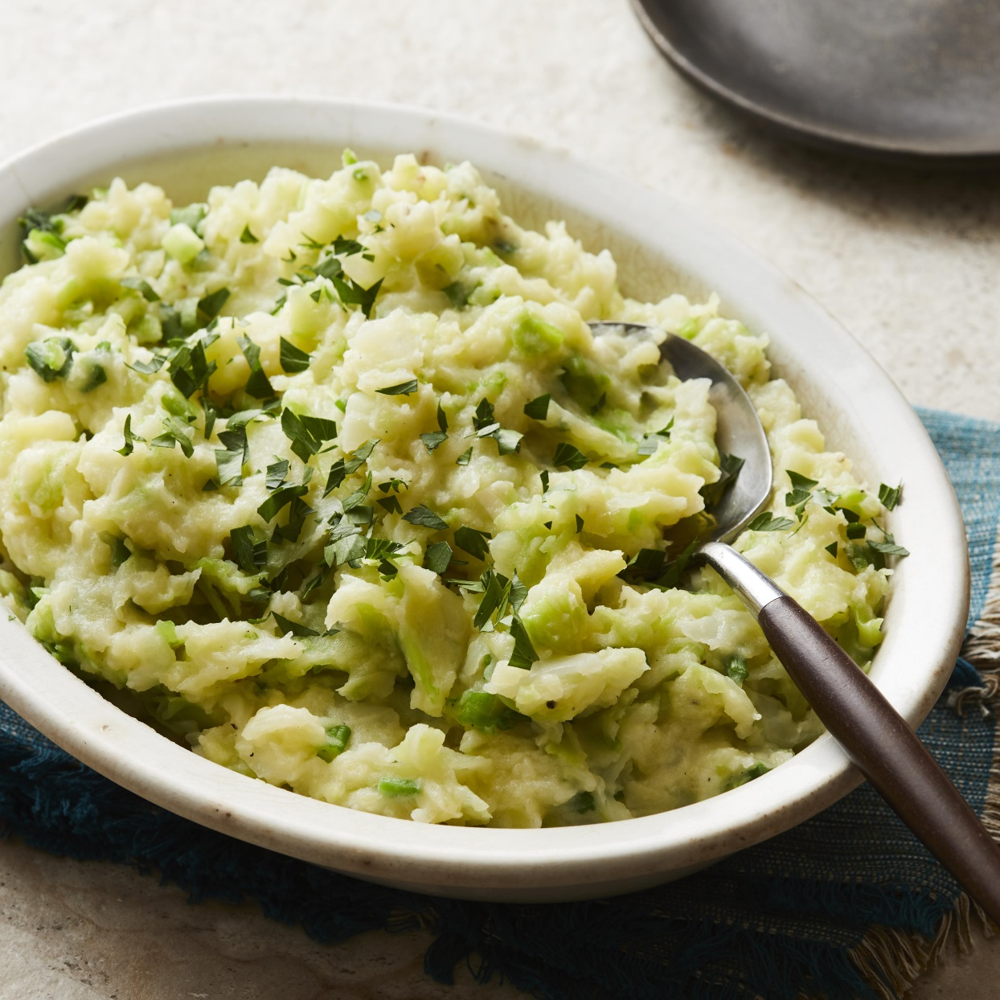

Colcannon

Colcutta is a dish ive quite frankly never made before but today we will give it a shot.
Ingrediants
- 1 pound potatoes
- 1 pound green cabbage, sliced
- 2 small leeks, cleaned and thinly sliced
- 1 cup milk, or as needed
- salt and pepper to taste
- 1 pinch ground mace
- ½ cup butter
Steps
- first we put the stuff in a pan
- then we mix the stuff
- now we put it into the oven
- take it out of the oven
- you thought i would say let it rest huh. fuck that eat it right away